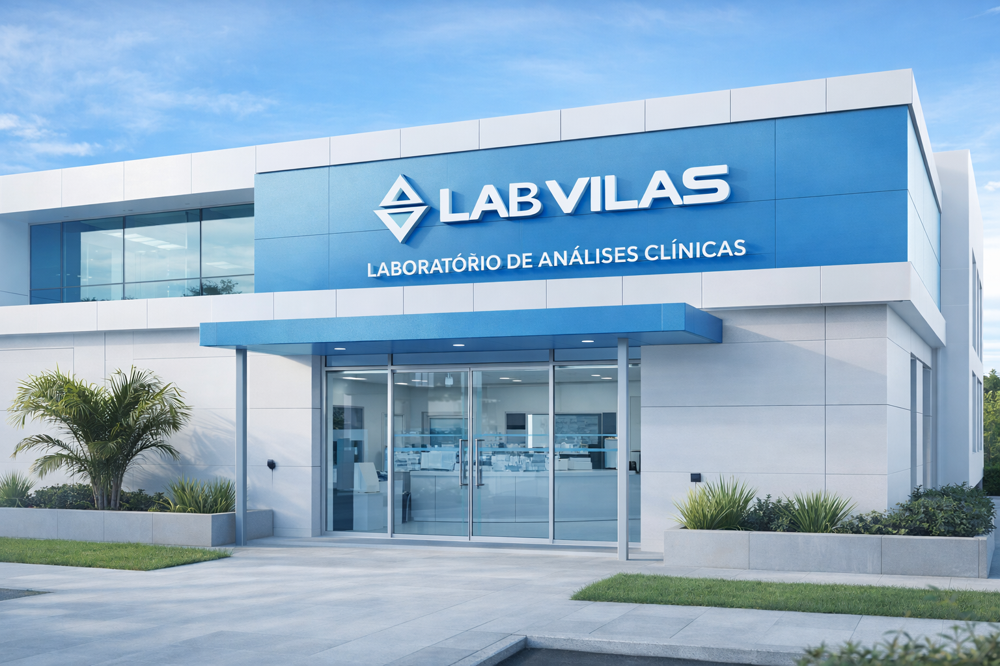

LabVilas
Historia
O LabVilas é um laboratório de apoio especializado em Analises clínicas, comprometido com a excelência no atendimento e com a construção de parcerias duradouras com laboratórios e conveniados.
Investimos continuamente em tecnologia para entregar resultados com mais praticidade, rapidez e segurança — a confiança dos nossos parceiros é o que nos move.
Estrutura
O LabVilas oferece atendimento personalizado com uma equipe treinada, capacitada e comprometida com a excelência. Nossa missão é construir uma relação sólida de parceria com cada laboratório conveniado.
Por meio do programa Parceria Total, disponibilizamos Bioquímicos e Biomédicos para consultorias técnicas gratuitas, workshops e palestras, além de suporte em gestão laboratorial — garantindo atualização constante nas áreas científica e administrativa.
Contamos com alianças estratégicas com os principais fornecedores do mercado de diagnósticos, o que nos permite oferecer um parque tecnológico moderno, ágil e confiável.
Nosso sistema Client permite que você acompanhe, em tempo real, cada etapa do processamento das amostras — do cadastro à liberação dos resultados. A integração B2B conecta diretamente o nosso sistema ao do seu laboratório, eliminando recadastros, reduzindo custos e otimizando tempo.
Com nossa nova sede, oferecemos estrutura moderna e confortável para que você acompanhe de perto cada etapa do seu trabalho. Venha conhecer nossas instalações e agende uma visita.

